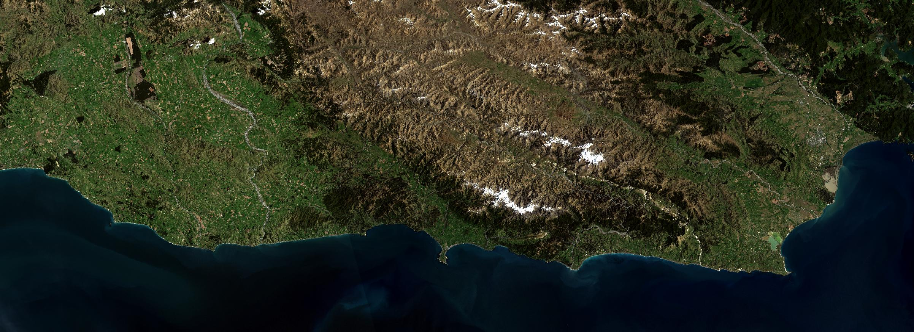

kaikoura3d
3D visualization of New Zealand's Kaikoura coast using Qgis2threejs and Landsat8 data

Landsat 8 raw data source:
- Earth Explorer @ https://earthexplorer.usgs.gov/order/process?dataset_name=LANDSAT_8&ordered=LC80730902016286LGN00 (requires registration)
- Amazon Web Services @ https://landsatonaws.com/L8/073/090/LC80730902016286LGN00 (no registration required)
- *Special mention to RemotePixel! https://remotepixel.ca/projects/index.html (very nice place to visualize and download Landsat8/Sentinel2 satellite data)
New Zealand 8m Digital Elevation Model
- LINZ Data Service (provides elevation to our pixels) @ https://data.linz.govt.nz/layer/1768-nz-8m-digital-elevation-model-2012/
Geographic Information System (GIS) tools
- QGIS 2.14 Essen Long term release (Desktop GIS platform) @ http://qgis.org
- Semi-Automatic Classification Plugin for QGIS (for Landsat processing) @ https://fromgistors.blogspot.com/p/semi-automatic-classification-plugin.html
- Qgis2threejs Plugin for QGIS (for 3D html/javascript visualization) @ https://plugins.qgis.org/plugins/Qgis2threejs/